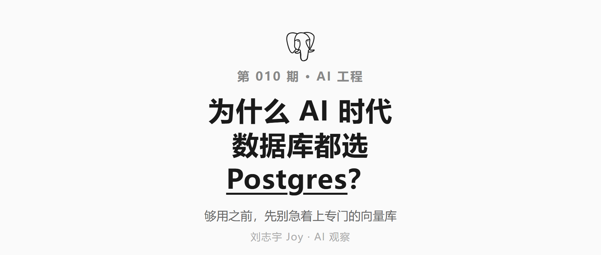

为什么 AI 时代的数据库都选 Postgres？
2026 · AI 工程观察 · 刘志宇 Joy
前几年给 AI 应用做检索，第一步几乎都是去选一个专门的向量数据库。两年过去，这一步正在被悄悄删掉，越来越多人发现把向量塞进手边的 Postgres 就够了。这篇讲这个反转怎么发生、为什么偏偏是 Postgres，以及什么时候你才真的需要一个专用向量库。
01
先挑个向量数据库，曾经是第一步
前几年，给产品加个 AI 问答功能，做法几乎是固定的：先把资料转成向量存起来，用户提问时再把最相关的几段捞出来，喂给大模型去答。
这套做法是被 ChatGPT 逼出来的。大模型本身不知道你公司内部那些文档、工单、知识库，你又不可能为了它去重新训练一个模型。折中的办法，是把自家资料切成小块、转成向量存好，用户一提问就按相似度捞回最相关的几段，塞进提示词里让模型照着答。这套后来被叫做 RAG，一时间成了几乎所有 AI 应用的标准起手式。
存这些向量的地方，标准答案是开一个专门的向量数据库，Pinecone、Weaviate、Qdrant 里挑一个。资本也是这么下注的：2023 年，Pinecone 一笔 B 轮就拿了一亿美元，估值冲到七亿五，a16z 领投；Weaviate、Qdrant 也在差不多的时间各自拿到数千万美元；开源那边，Milvus 的 GitHub 星标冲过三万。一个全新的数据库品类，几乎是凭空长了出来。
那阵子的教程和架构图，默认画法都是大模型旁边挂一个专门的向量库。那一步没人问为什么，就像没人问一个网站为什么要有数据库。
现在这一步正在被悄悄删掉。越来越多人发现，那个专门的向量库根本不必开，把向量直接塞进手边已经在跑的 Postgres 就够了。最早把这话挑明的是后端平台 Encore，不过它自己主打的就是一体化后端，立场也在这边。
那两年那么选，有它的道理。检索是 AI 应用的刚需，向量检索是检索的核心，配个专门的工具顺理成章，就像数据进数据库、缓存用 Redis。这个直觉太顺了，顺到没人停下来算一笔账：为了一次相似度查询，你要凭空多养一整套系统，多一个要部署、要监控、还要时时跟主库对齐的东西。这笔账，这两年越来越多人开始算了。
02
风向掉头
反转最明显的标志，是给新项目选型时，默认建议整个掉了个头：先用你已经在跑的 Postgres 加 pgvector，除非有特别的理由，才考虑专门的向量库。
要看懂这个反转，得先认识 pgvector。它是个开源扩展，给 Postgres 装上向量类型和向量索引，让相似度检索变成普通 SQL 的一部分。它不算新东西，2021 年就有了，但早期只有一种较慢的索引，撑不起认真的生产负载。真正让它能打的那块拼图，是 2023 年下半年加进的 HNSW 索引。有了 HNSW，pgvector 在百万级向量上的检索延迟能压到几十毫秒、召回率超过九成，跟专用向量库放进同一个量级里比，不再是玩具。从那以后，几乎所有主流托管 Postgres，AWS、Supabase、Neon、Azure、Google Cloud，都把 pgvector 当成开箱即用的标配。
〖 此处插一张截图：pgvector 已是主流（GitHub 两万多星、各大托管 Postgres 标配）
截图来源 github.com/pgvector/pgvector · 上传图片后删掉本行 〗
押得最狠的是 Supabase。这家公司本来就靠把 Postgres 包装成好用的后端起家，这两年它几乎把整个 AI 故事都压在 Postgres 上：开箱带 pgvector，产品线直接叫 Supabase Vector，围着它做了自动向量化、语义缓存一整套工具，还亲自写文章跟 Pinecone 比成本、比性能，论证同等场景下 pgvector 更省也更够用。市场给的回应不小：2025 年 4 月，这家走纯 Postgres 路线的公司融了两亿美元，估值二十亿。
当然，Supabase 卖的就是 Postgres 托管，它说 pgvector 够用，本来就带着立场。有意思的是另一头：Pinecone 也专门写了文章，逐条论证 pgvector 为什么不够认真用，这些批评后面会收。一边卖向量库的说你需要它，一边卖 Postgres 的说你不需要，两边都有自己的立场。但风往哪边吹，看默认架构图就知道：两年前你得解释为什么敢用 Postgres 做向量，现在要解释的反过来是，为什么还得单独上一个向量库。
得说清楚，这不代表向量库凉了。这个市场还在快速变大，有机构预测它会从 2024 年的约二十亿美元长到 2032 年的上百亿（机构预测口径本来就宽，看个量级就好）。变的不是这门生意的死活，是它的起点位置：向量库从做 AI 应用的第一步，退回成撞到墙之后才考虑的一步。pgvector 没杀死谁，它只是把最大的那块入门市场，从专用库手里端走了。
03
为什么偏偏是 Postgres
接住这一波的为什么是 Postgres，而不是又一个新工具？不是它运气好，是 AI 应用要存的数据，恰好长在它最擅长的地方。具体有三条，一条比一条实际。
第一，数据待在一起。做检索，你存的从来不只是向量，还有原文、它属于哪个用户、哪个文档、什么时候建的、有没有被删。用 pgvector，这些和向量在同一张表、同一个事务里，一次写入要么全成、要么全不成，天然一致。用专门的向量库就拧巴了：向量在向量库、源数据在主数据库，两套系统各存一半。你得自己写同步逻辑，或者挂一个后台对账任务，把两边对齐。这中间任何一步掉链子，后果都很具体：用户删掉的文档还能被检索出来，或者查到一条早就改过的旧内容。本该是一次最近邻查询，硬生生变成一道分布式一致性的题。
第二，少养一套系统。上一个专门的向量库，你的架构里就多出一块：它要单独部署、单独配一套凭据、单独接进监控、出问题单独排查，半夜宕的时候也会单独把你叫醒。用 pgvector，这一块整个没了，向量就是你主库里的几张表。对小团队和快迭代的产品，省下的这份运维负担，常常比那点性能差更值钱。你本来人就不够，不会想再多伺候一个系统。
第三，检索就是一句 SQL。向量检索不再是另一个系统的接口调用，而是普通查询的一部分。举个常见场景：你要在某个用户自己的文档里，按语义找最相关的五段。用 pgvector，这就是一条 SQL，先按用户和权限过滤，再按向量相似度排序，顺手 join 上文档表拿标题。换成两套系统，你得先去向量库查一批，再回主库验证权限、补全字段，来回倒腾，还要担心两边对不上。Postgres 三十年攒下的事务、备份、复制、权限这套东西，在这里全都顺带就用上了。
说到底，不是 Postgres 突然学会了做向量，是 AI 应用要存的数据，原文加元数据加向量绑在一起、还得带着过滤条件查，这个形状本来就长在关系数据库的主场上。专门的向量库擅长的是另一件事：在海量向量里做极速的最近邻。两件事不一样，只是前两年很多人没分清。
04
那什么时候才真需要专用向量库
把话说回来，默认用 Postgres，不等于 Postgres 能扛一切。pgvector 有它真实的边界，有些问题还会在你长大之后变得很疼。这一节专门讲它什么时候不够用，以及那时候该往哪走。
前面提到 Pinecone 写过一篇文章逐条挑 pgvector 的毛病。它立场摆在那，但有几条是实打实的工程痛点，值得认真听。
一是内存悬崖。pgvector 的 HNSW 索引想要快，基本得整个装进内存，建索引时还要再吃掉相当于数据本身一点几倍的内存。麻烦在于它不是平滑变慢的：数据没涨到内存装不下时一切正常，一旦越过那个临界点，索引开始往磁盘上换页，建索引和查询都会突然慢上十倍以上。你可能毫无预兆地从很快掉进很慢，而且很难提前算准那个临界点在哪。一份五千万条、768 维的向量，光索引就可能要上百 GB 内存，这已经不是随手一台机器扛得住的了。
二是带条件的过滤检索。真实场景里你很少做纯粹的全局相似度搜索，更多是在某个用户、某个租户、某个分类里面找。pgvector 处理这种带过滤的检索很别扭：先过滤再搜，可能因为命中太少而结果不足；先搜再过滤，又可能把符合条件的好结果挡在外头。Pinecone 说在它们的测试里，pgvector 这块达不到生产要求，而这恰恰是专用库重点优化的地方。
三是容量不好估。同样一批数据，建出来的索引能比原始数据大上两到五倍，具体多大跟数据分布有关，基本只能事后才知道，容量规划于是变成了猜。
规模再往上，裸的 pgvector 也会吃力，通常在几百万到上千万向量这个区间开始显出来。续命的办法是再加一个扩展，叫 pgvectorscale，它把一部分索引放到磁盘上、不全压在内存里，专门对付大规模。做它的是 Tiger Data（原来的 Timescale）。按它自己的基准，在五千万向量的规模上加上 pgvectorscale，延迟能低到二十几倍、成本省七成多，反超 Pinecone（据 Tiger Data 自家基准）。这组数字很漂亮，但两件事得记住：一是它出自卖 Postgres 服务的公司自己的测试，口径自己定；二是立功的是 pgvectorscale 这个额外扩展，不是 pgvector 本身。这俩名字像，经常被当成一个东西，其实是两层。
〖 此处插一张截图：pgvector vs Pinecone 性能与成本基准（Tiger Data 自家口径）
截图来源 tigerdata.com/blog/pgvector-is-now-as-fast-as-pinecone-at-75-less-cost · 上传图片后删掉本行 〗
那什么时候是专用库真正更合适？几种情况很清楚。向量到了亿级、写入吞吐极大，这是 Pinecone 这类托管系统的主场，你不用操心怎么扩容。对延迟和每秒查询数有极致要求的，Qdrant 用 Rust 写的内核在这块最快。需要很重的多租户和混合检索的，Weaviate 在这个方向上更专。还有一种最简单的情况：你的栈里压根没有 Postgres，那 pgvector 复用现有库的好处就归零，直接上一个专用库反而更干脆。
反过来，从专用库迁回 Postgres 也不是免费的。有团队把生产系统从 Pinecone 迁到 pgvector，花了几天工程时间重导向量、重建索引、调参数，换来每月省下一千多美元的账单；也有团队把 Pinecone 加一套关系库，合并成 Neon 上的一个 Postgres，延迟还降了一截（这些都是迁移方或托管商自己讲的复盘，有立场，听个思路就好）。迁移有成本，但对很多正为账单和运维发愁的团队，这笔账算得过来。
至于到底多少向量算该升级，没有一个干净的数字。有人说一百万，有人说五百万，也有人说一千万以上加高并发才需要，它取决于你的并发量、过滤复杂度、更新频率。
这个数字不必纠结，关键是先后：默认用 Postgres，直到撞上一堵能量化的墙（延迟超标、内存扛不住、过滤场景做不动），再换专门的向量库。它是撞墙之后的选择，不是第一步。
05
又一次绕回朴素
把镜头拉远一点，向量这件事不是孤例。这几年基础设施领域一直有一股往回走的劲。
有人写过一篇流传很广的文章，标题就叫《什么都用 Postgres 就行》，论证消息队列、缓存、定时任务这些原本各有专门工具的活，到中等规模为止，一个 Postgres 都能接住：发消息可以省掉 Kafka，做缓存可以省掉 Redis，存文档可以省掉 MongoDB。作者把这看成一种技术上的省着花：少上一个系统，就少一份长期要还的复杂度。向量检索，只是这张「什么都塞进 Postgres」清单上，最新加进来的一项。
类似的剧情这两年反复上演：一个复杂的专用方案被发现用力过猛，大家又退回到更朴素、更久经考验的老工具上。换个角度看，这也是行业从淘金热里冷静下来的标志，新鲜劲过去，大家开始重新在意少养一个系统、少还一份债。
绕这一圈挺有意思。AI 这波浪潮大到让人以为整个技术栈都得换新，可在存数据这件最底层的事上，它没催生出什么新东西，反而把人送回了那个用了三十年的老数据库。向量检索一度被当成需要一套新基建的新问题。现在看，它更像 Postgres 本来就能接住的老问题。
— 完 —
#Postgres #pgvector #向量数据库 #RAG #AI应用
文中事实的来源链接列在文末。数据时间戳：2026-05。标了「据 Tiger Data 自家基准」「机构预测」的数字（pgvectorscale 性能与成本、向量数据库市场规模）有厂商立场或属预测，以原始出处为准。
参考资料
一手 / 官方
· Encore · 你多半不需要一个向量数据库
https://encore.dev/blog/you-probably-dont-need-a-vector-database
· pgvector · 开源仓库
https://github.com/pgvector/pgvector
· PostgreSQL 官方 · pgvector 0.5.0 发布（加入 HNSW 索引）
https://www.postgresql.org/about/news/pgvector-050-released-2700/
· AWS · RDS for PostgreSQL 支持 pgvector 0.5.0 与 HNSW（2023-10）
https://aws.amazon.com/about-aws/whats-new/2023/10/amazon-rds-postgresql-pgvector-hnsw-indexing/
· Supabase Vector · 基于 Postgres 的向量数据库与 AI 工具
https://supabase.com/modules/vector
· Stephan Schmidt · 什么都用 Postgres 就行
https://www.amazingcto.com/postgres-for-everything/
厂商对比（有立场，数字以原文为准）
· Tiger Data · pgvector 反超 Pinecone（性能与成本基准）
https://www.tigerdata.com/blog/pgvector-is-now-as-fast-as-pinecone-at-75-less-cost
· Supabase · pgvector vs Pinecone（成本与性能）
https://supabase.com/blog/pgvector-vs-pinecone
· Pinecone · pgvector 没那么省心（专用库视角的反驳）
https://www.pinecone.io/blog/pinecone-vs-pgvector/
数据 / 报道
· TechCrunch · Pinecone B 轮一亿美元、估值七亿五（2023-04）
https://techcrunch.com/2023/04/27/pinecone-drops-100m-investment-on-750m-valuation-as-vector-database-demand-grows/
· Fortune · Supabase D 轮两亿美元、估值二十亿（2025-04）
https://fortune.com/2025/04/22/exclusive-supabase-raises-200-million-series-d-at-2-billion-valuation/
· 向量数据库市场规模预测（2024→2032，机构预测）
https://www.globenewswire.com/news-release/2025/03/07/3039040/0/en/Vector-Database-Market-to-Reach-USD-10-6-Billion-by-2032-SNS-Insider.html
· 迁移复盘 · 从 Pinecone 迁到 Postgres + pgvector（乙方视角）
https://justsoftlab.com/insights/postgres-pgvector-vs-pinecone-production-benchmark